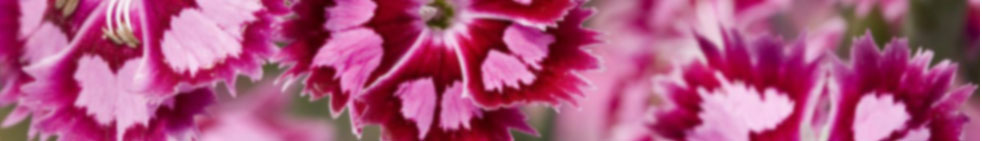

|  |
|
El clavel es una planta herbácea originaria de la zona mediterránea, aunque también conocida en la península ibérica. La flor pertenece a la orden de las Caryophyllales, familia de las Caryophyllaceae, y la mayor parte de sus especies florece durante todo el año. Los claveles son flores muy aromáticas y coloridas, y son frecuentemente cultivadas para ser obsequiadas. Se reconoce especialmente tres grandes variedades de claveles de cultivo masivo las cuales se agrupan en "Dianthuscaryophyllussubsp. Coronarius", "Dianthuscaryophyllusvar. Coronarius", y "Dianthuscaryophyllussubsp. Coronarius". En el caso del cultivo ornamental, resaltan el clavel común, el clavel del poeta, el clavel coronado, el clavel de roca y el clavel de China. |